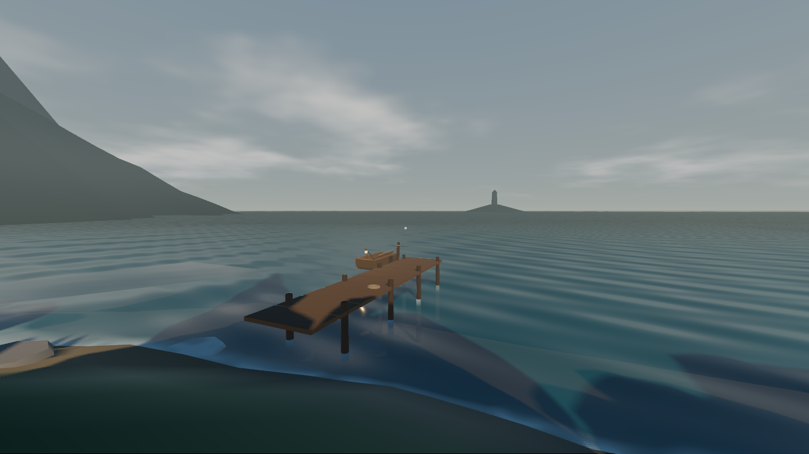
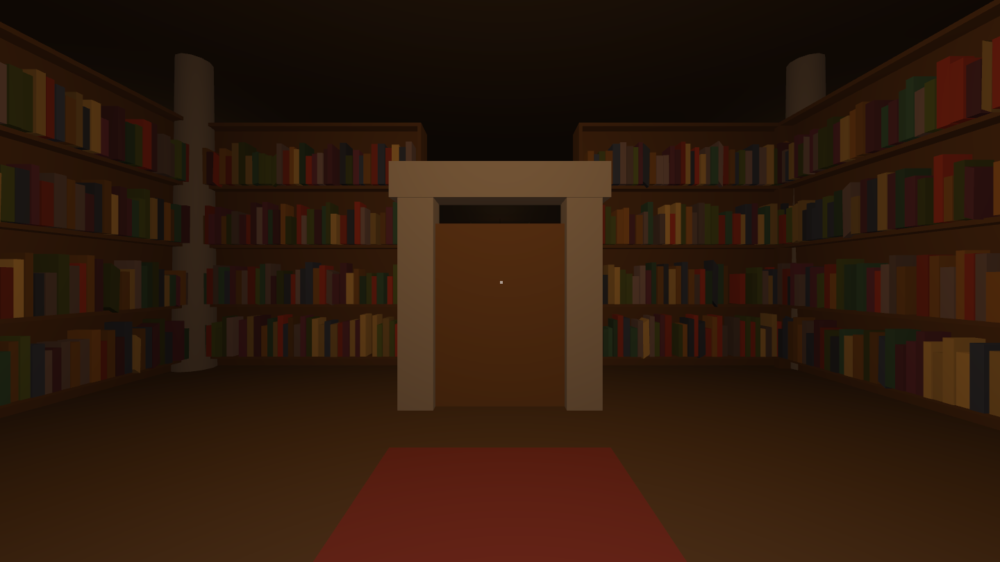
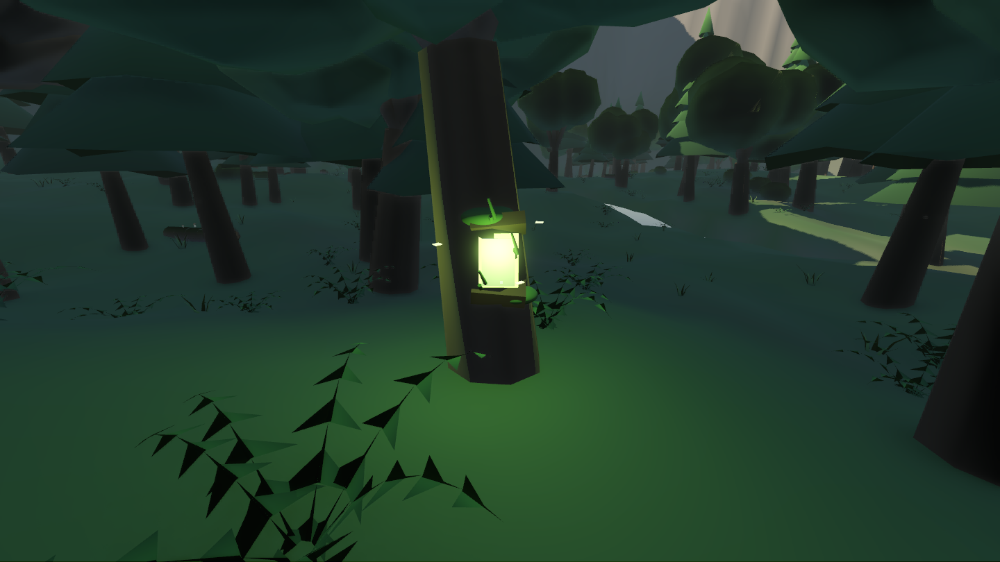
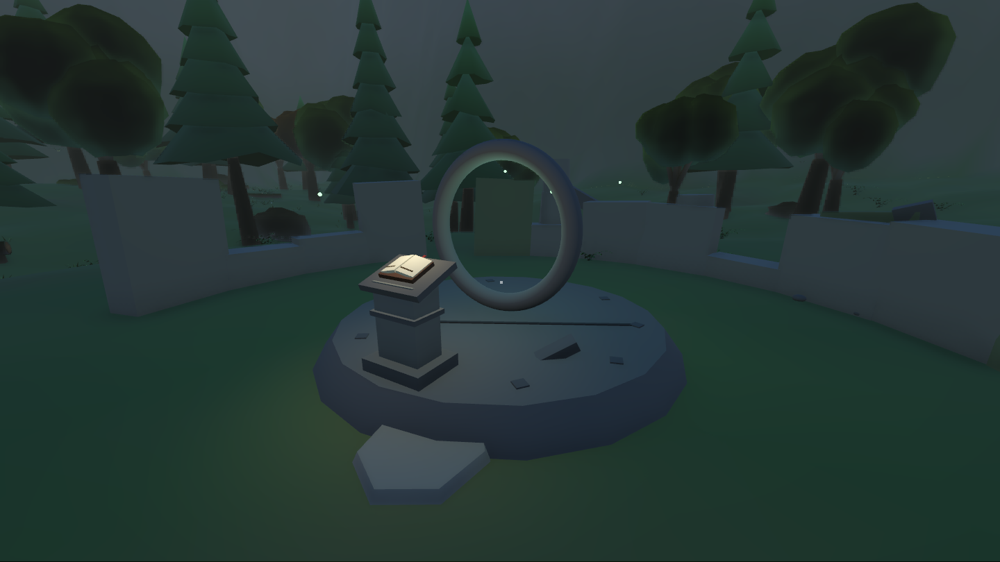
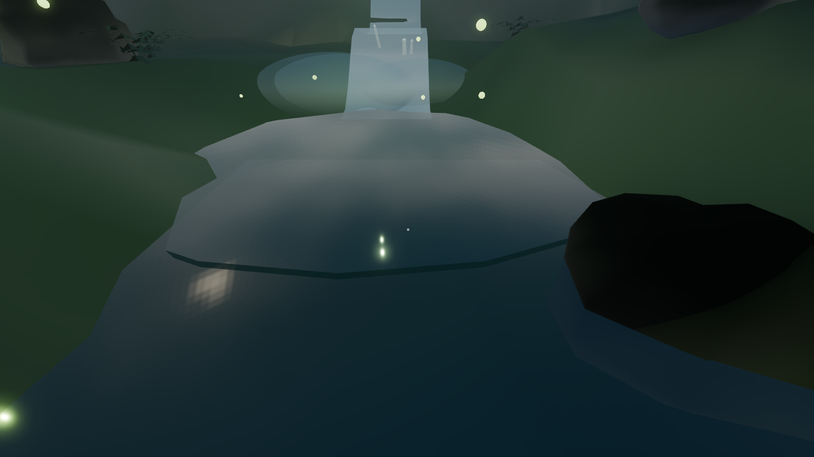
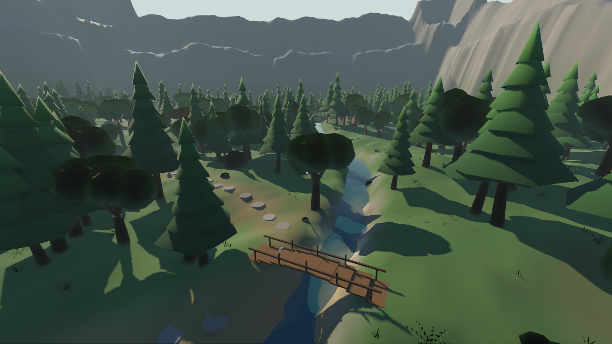
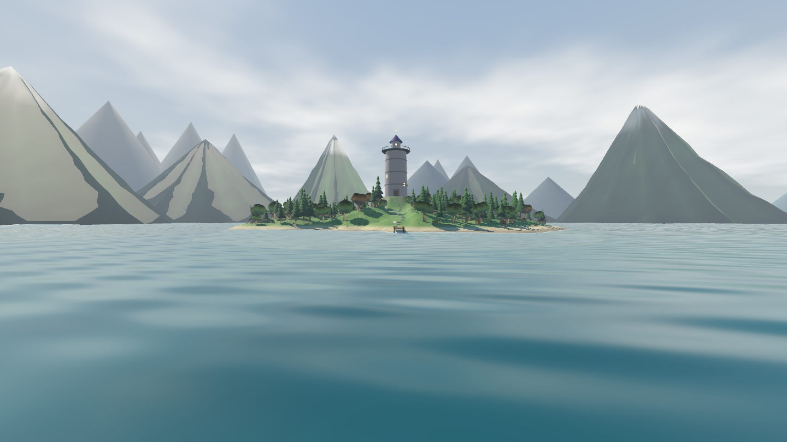
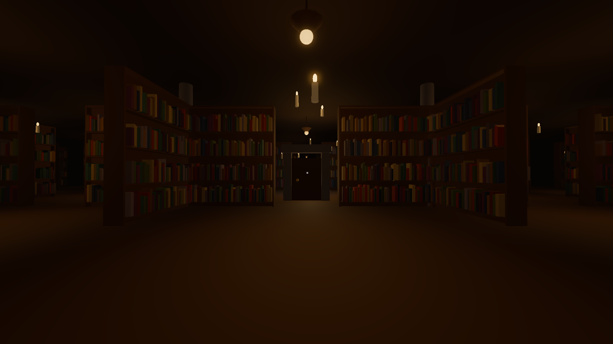
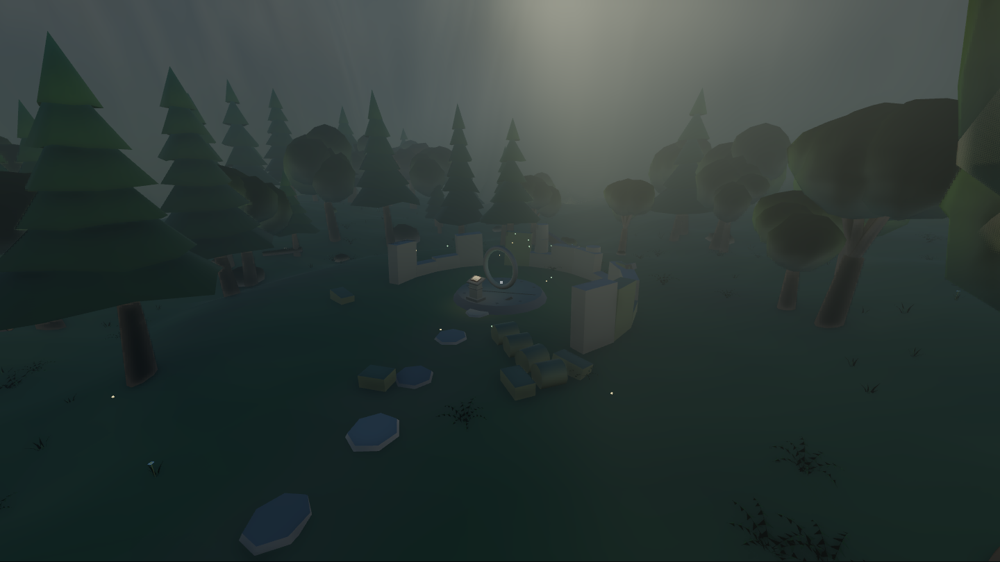
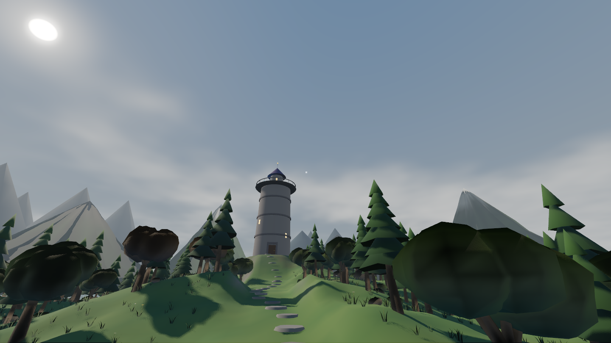

A quiet place, made entirely of code.
The premise
You arrive by rowboat on a green island adrift in a vast lake, ringed on every horizon by forested mountains. A stone path climbs to the wizard's tower — which is larger inside than out. Its interior is an endless library containing every book ever written, and the shelves genuinely do not end.
There is no combat, no timer, and nobody talks to you. The story is told by the things the wizard left behind: a journal open mid-entry on a ruin's lectern, a carved boundary stone, five books a forest refused to give back — and a stranger's note that raises more questions than it answers.
Sit in the rowboat and it rows itself across the water to the far shore, where a cairn-marked trail leads under old growth to the ruin of the First Tower: the wizard's failed first library, and the reason the island exists.
Plates










Chapters
The island, the tower, the infinite streamed library, and shelves that hand you generated books.
Books open across the screen and read coherently; a paper bird leads you out of the stacks; the crystal folds the world.
The rowboat rows itself across the lake to an old-growth shore, a winding trail, and the ruin of the First Tower — with the wizard's journal waiting on the lectern.
Five kept books glow in living trees; returning every word wakes a door. A hidden spring, a hermit's cold camp, and cliffs instead of invisible walls.
The lake learned depth — foam laps the shorelines and the sun breaks into glints. A procedural sky drifts real clouds overhead, once the fog stopped painting over the heavens.
God-rays shaft through the old forest's canopy, floating candles light the library's endless stacks, and every scene moved to the AgX tonemapper.
Wind sways every canopy and blade, pollen drifts through the god-rays, the cliffs wear strata — and the headlands finally dive beneath the lake.
Colophon
There are no art assets. Every mesh, material, tree, mountain, book, and page of prose is generated by code at runtime — the repository is scripts, three six-line scenes, one shader, and an SVG icon. Every change to the world is a readable diff.
The game tests itself the same way you'd play it: a headless smoke test travels every scene, opens books with simulated key presses, rides the boat, and literally walks the footbridge and the boundary cliffs with held input to prove the world holds.
Read the architecture, the vision, or how to contribute — no Godot experience assumed.